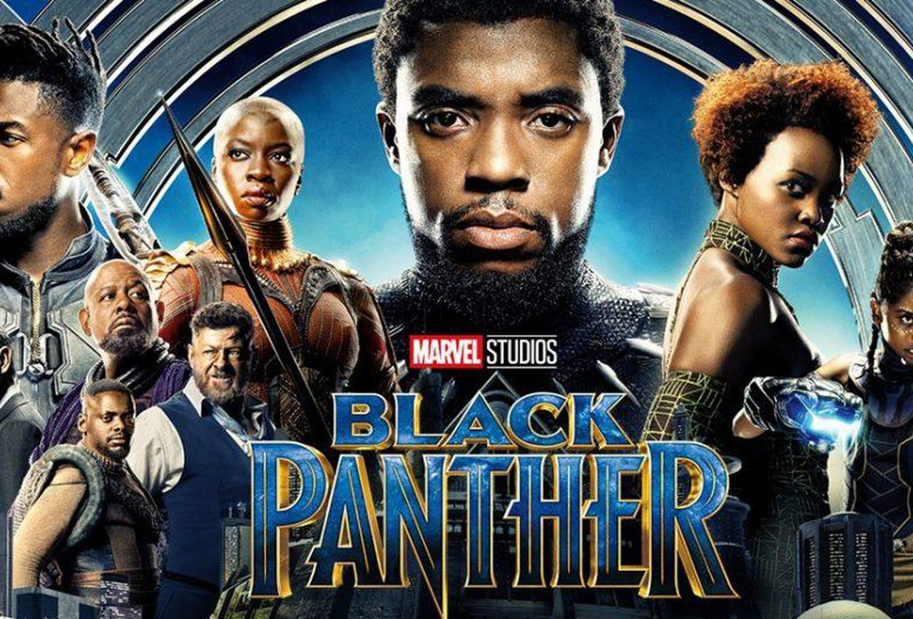
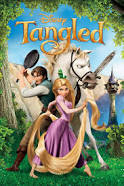
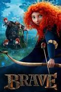
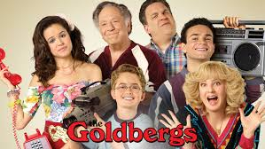
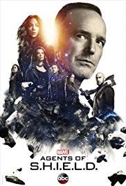
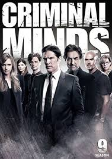
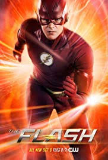

My obsession, however, began from watching tons and tons of movies/t.v. shows with my older sisters from a young age.
We would watch movies and T.V. shows for hours on end through school vacations and slowly it became an obsession.
One thing I'd like to do soon would be see a movie in a outside theatre. Most of the movies/t.v. shows I watch can be found on Netflix,Hulu,and in theaters. Just like every movie/t.v show lover I do not have only one absolute favorite but I do have a constantly changing top 4 for both movie and t.v. shows.
The list goes as:
1.) Infinity War
Rating:

2.) Black Panther
Rating:

3.) Tangled
Rating

4.) Brave
Rating

For T.V. Shows it has to be:
1.) The Goldbergs
Rating:

2.) Marvels Agents of S.H.I.E.L.D. Rating:

3.) Criminal Minds
Rating:

4.)The Flash
Rating:
